About
I enjoy creating ludicrously large panoramas by taking many pictures and assembling them in Photoshop. For the largest panoramas, I use a 70-300mm lens, and take each image at maximum zoom. Using this technique, I've been able to take panoramas up to 56,000 pixels wide with file sizes over 600MB.
With such a high resolution, images have interesting details at the micro and macro level. See if you can find where these detail patches came from!
|
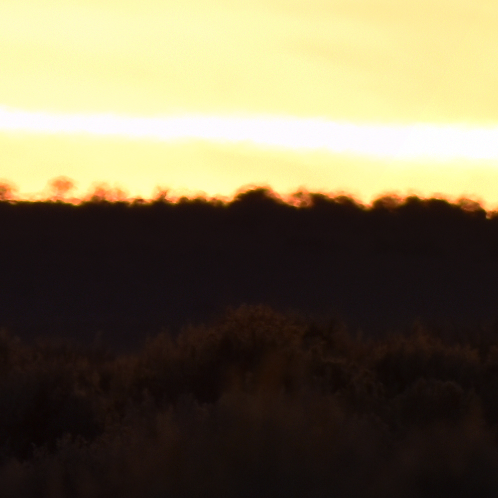
 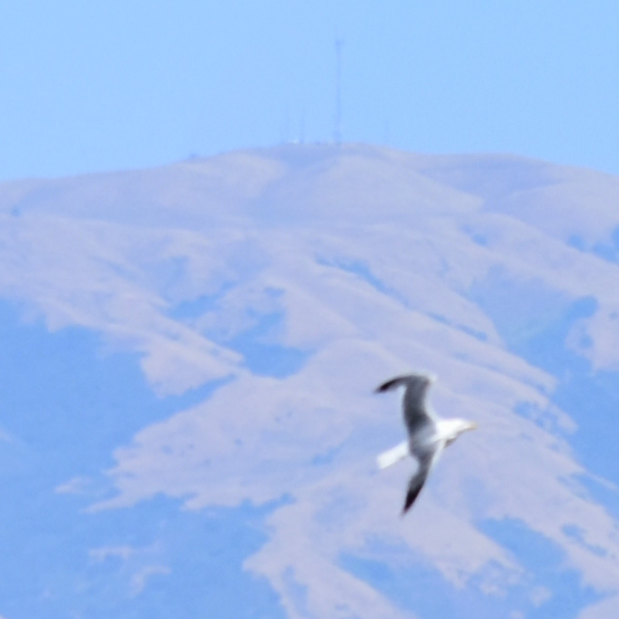
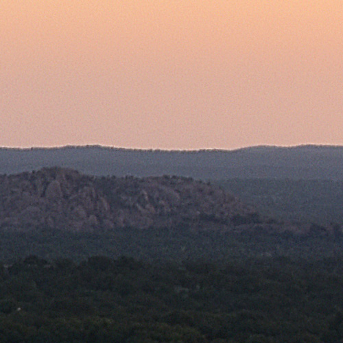
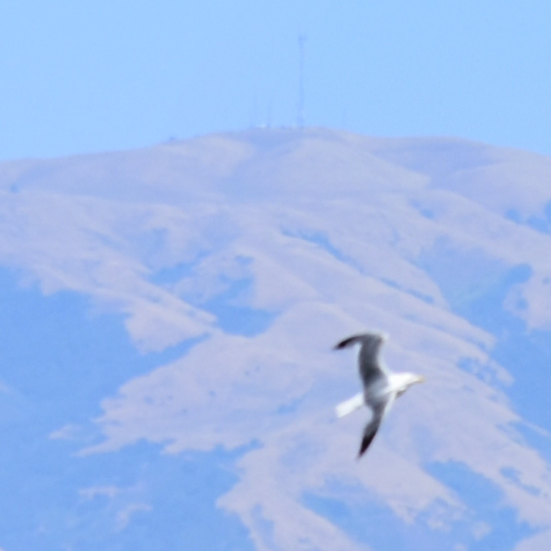
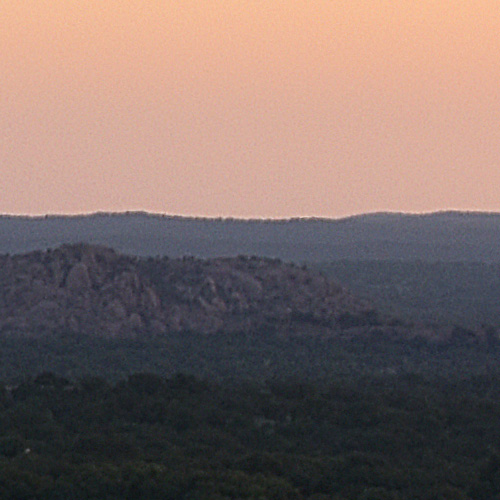
|
Panoramas
| Ridge at Far Noon |
Taos Ski Valley, New Mexico
- 16307 x 3888 (107.7MB)
- f/10 | 1/320s | ISO-400 | 110mm
|
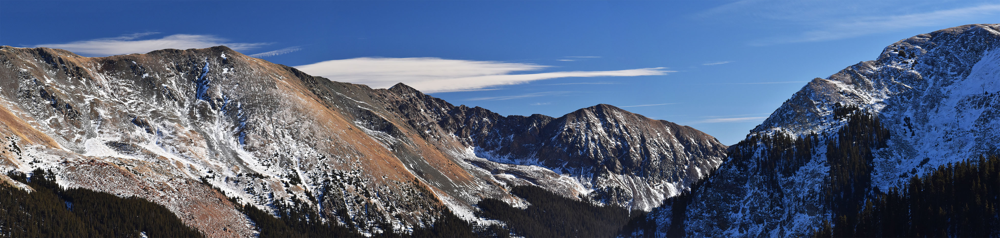 |
| Pueblo Peak at Late Noon |
Arroyo Seco, New Mexico
- 30000 x 5336 (224MB)
- f/5.6 | 1/320s | ISO-100 | 70mm
| 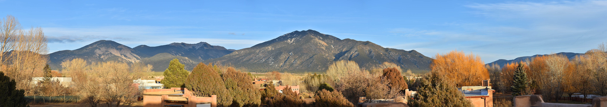 |
| Pueblo Peak at Night |
Arroyo Seco, New Mexico
- 19097 x 4012 (92.6MB)
- f/6.3 | 15s | ISO-3200 | 70mm
| 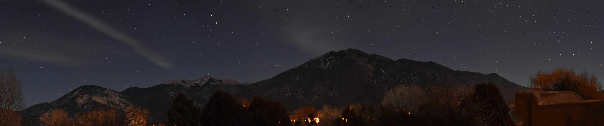 |
| Sunset by the Rio Grande |
Arroyo Seco, New Mexico
- 18817 x 3578 (77.2MB)
- f/6.3 | 1/200 | ISO-160 | 300mm
| 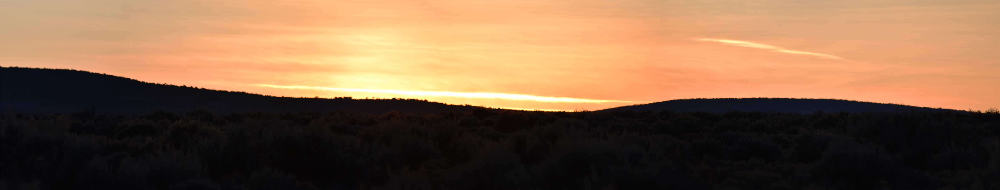 |
| Sunrise Over Enchanted Rock |
Enchanted Rock State Natural Area, Texas
- 31681 x 3463 (313MB)
- f/6.3 | 1/80s | ISO-100 | 24mm
|
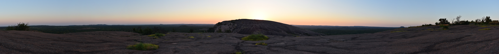 |
| Marsh in Coyote Hills (East) |
Coyote Hills Regional Park, Fremont, CA
- 36651 x 3825 (401MB)
- f/7.1 | 1/800s | ISO-200 | 70mm
|
 |
| Marsh in Coyote Hills (North) |
Coyote Hills Regional Park, Fremont, CA
- 56554 x 3743 (605MB)
- f/7.1 | 1/800s | ISO-200 | 85mm
|
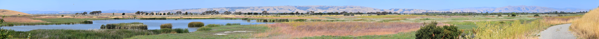 |
| View of San Francisco |
Coyote Hills Regional Park, Fremont, CA
- 22715 x 2723 (67.8MB)
- f/6.3 | 1/2000s | ISO-250 | 300mm
|
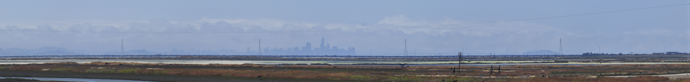 |
Non-panoramic Photos
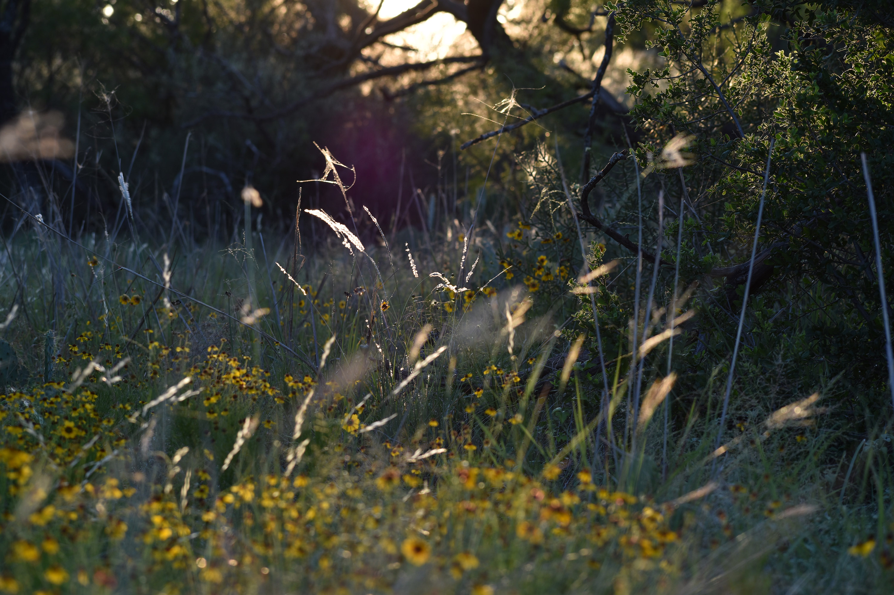